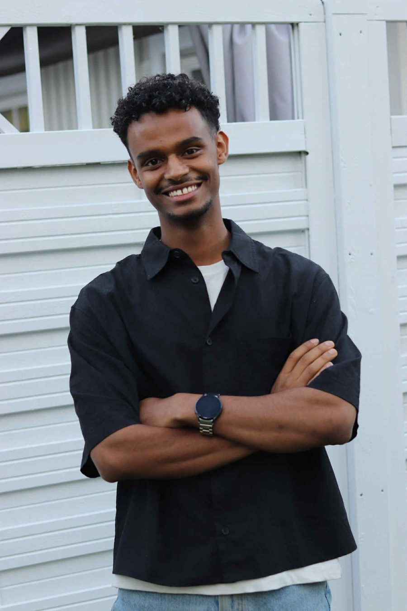

Praksis hos Universitetet i Agder
På denne siden dokumenterer jeg praksisarbeidet mitt hos UiA, hvor jeg er med på å videreutvikle en chatbot-tjeneste for universitetets ansatte, studenter og besøkende.

Henos Habtab
Jeg har erfaring med fullstack-utvikling, med særlig interesse for frontend og cybersikkerhet. I tidligere semestre har jeg trivdes godt med gruppeprosjekter, hvor jeg blant annet har fungert som gruppeleder og hatt det overordnede ansvaret for prosjektet.
Dette semesteret går jeg inn i et prosjekt i samarbeid med mine kolleger Benjamin og Tobias, hvor vi skal utvikle en chatbot-løsning for UiAs ansatte, studenter og øvrige besøkende på universitetets nettsider. Målet er å gjøre det enklere for brukerne å navigere på nettsidene og raskt finne frem til relevant og nødvendig informasjon.
Oppgavebeskrivelse
- Videreutvikle chatbot-tjenesten sammen med Tobias og Benjamin i UiA-hjelp
- Sette tydelige rammer og begrensninger for agenten
- Samle inn og vurdere brukerbehov og tilbakemeldinger underveis
I dette praksisprosjektet skal jeg bistå mine kolleger Tobias og Benjamin fra UiA-hjelp med å videreutvikle en chatbot-tjeneste ved Universitetet i Agder. Tjenesten skal brukes både internt av ansatte og eksternt av studenter og besøkende, og målet er å gi veiledning og hjelpe brukerne med å finne relevant informasjon på universitetets nettsider på en enklere måte.
Gjennom prosjektet får jeg praktisk erfaring med utvikling og bruk av AI-agenter, samt hvordan man utformer gode og presise prompter. Et viktig fokus vil være å sette tydelige rammer for agenten, slik at den opptrer forutsigbart og holder seg til sitt tiltenkte bruksområde, UiAs egne nettsider og ressurser.
Som en del av prosjektet vil jeg også samle inn og se på brukerbehov og tilbakemeldinger, slik at vi kan vurdere hvordan løsningen kan forbedres. I arbeidet vil jeg ta i bruk relevante arbeidsmetoder og teknikker fra tidligere semestre i studiet, samtidig som jeg får mulighet til å prøve ut nye verktøy og arbeidsmåter i praksis.